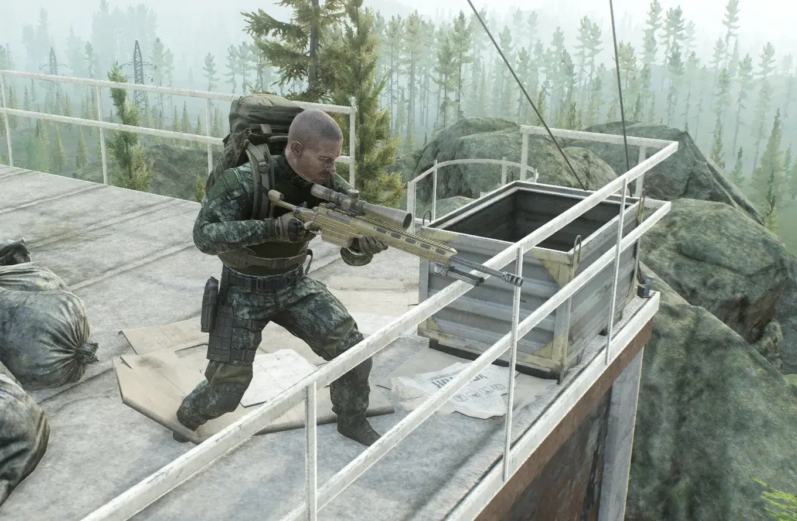
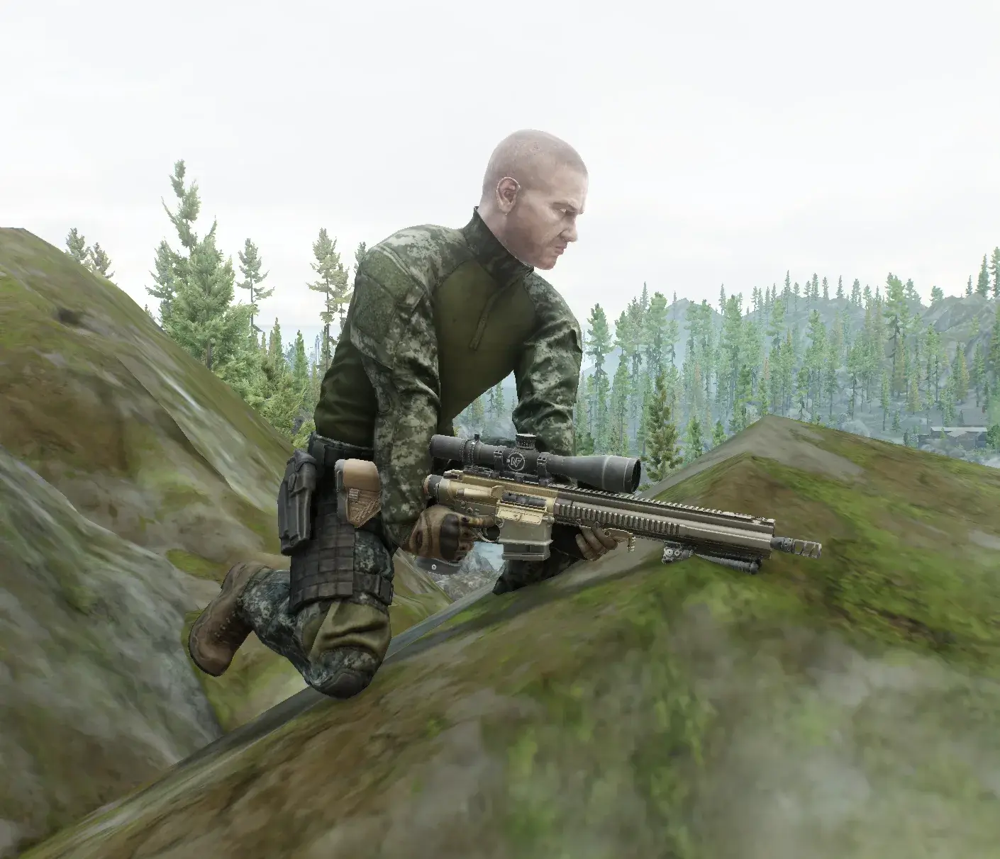
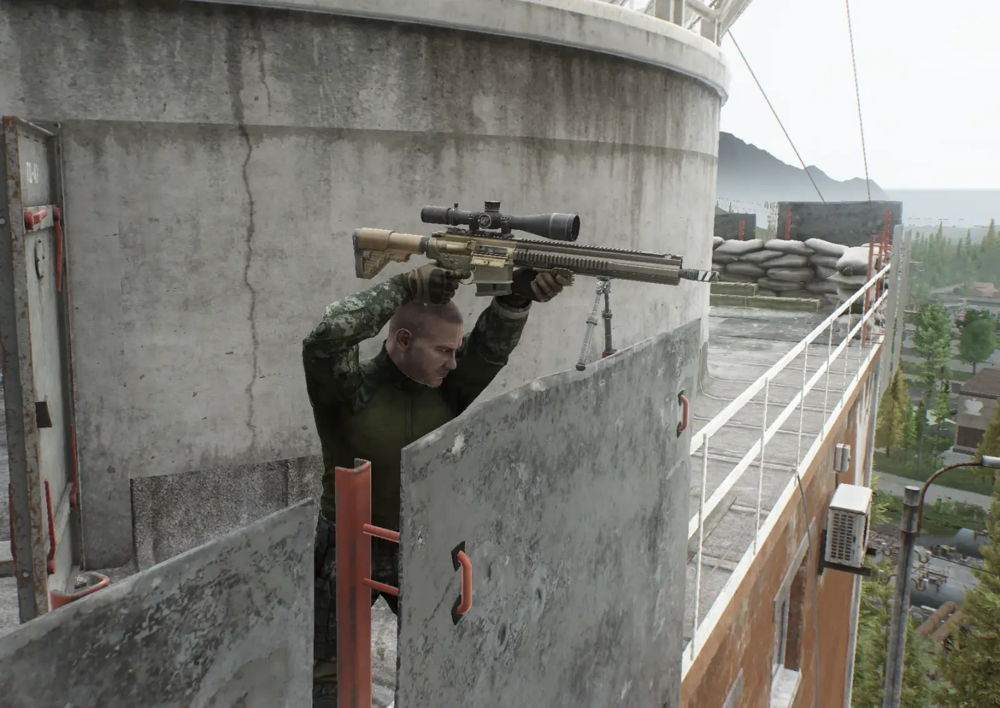

EasyMounting
- Downloads
- 3,537
- Favourites
- 30
- Mod lists
- 55
Overview
An SPT mod bundle that makes bipod deployment and weapon mounting (ledges, windowsills, railings, etc.) far less picky about the surface. Two parts, shipped together:
- Server mod - relaxes the surface-detection tolerances stored in
globals.jsonvia simple presets. Handles the vast majority of cases on its own. - Client plugin - patches the handful of mounting checks hardcoded in the game client that no server config can reach, up to and including some deliberately “cursed” bypasses.
Neither strictly requires the other, but they’re designed to be used together - some spots only become mountable with both installed.
What it does
Vanilla EFT is fairly strict about what counts as a valid mounting point: the surface angle
tolerance, accepted height range, and detection resolution in globals.json under
MountingSettings reject a lot of real-world edge cases (tilted ledges, thin railings, uneven
cover). The server mod overwrites those values in memory at server startup according to the
preset you pick, plus widens how far up/down you can look while mounted. The client plugin then
covers what’s left: railings whose collision lives on a physics layer the detection rays never
query, spots too tight for the body-clearance check, and even paper-thin colliders that have no
top surface for the scan to find at all.
Installation
As usual, unzip to your SPT directory.
All details in README.md



Let me know if you run into any problems or have suggestions for improvement.
Version
1.2.0
- Added an option that generates a support package containing all the necessary information for debugging.
- If you’re not having any issues with the mod, you don’t need to update it.
How to use: Configure the hotkey in the F12 menu; when you press it, a 10-second timer starts. Try to mount at the appropriate location; the folder containing the ZIP file will open automatically once the timer expires. Send it using a file-sharing service of your choice.
Version
1.1.0
- New bundled client plugin: unlocks mounting spots that no server setting could ever reach.
- Thin railings are finally mountable: some railings have paper-thin collision the game could literally never detect as a surface; the plugin now handles these.
- Tight spots now work: spots that are geometrically valid but too tight for vanilla anti-clip check now mount properly
- Fixes a vanilla weapon bug: weapons with broken mounting data (e.g. the TRG M10) were basically unmountable; they now rest properly on the surface.
Version
1.0.0
initial release